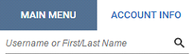
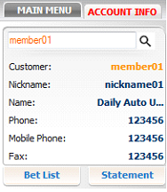
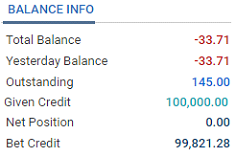
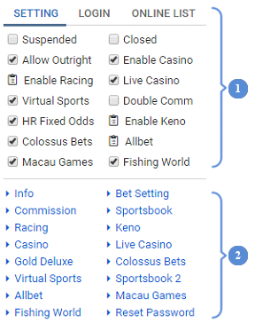
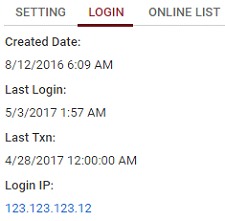
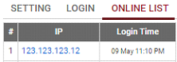
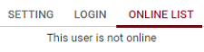

In general, Account Info assists SMA to search for and manage member information and settings (Position Taking, Bet Setting, Commission, etc.).
As the title says, this function assists SMA to search for downline accounts only and can be seen as the first required step at Account Info function.

Enter an account and click button to display the target account details:

Balance Info section provides SMA with the information related to balance, outstanding, credit and can proceed with the transfer function of the target account.

The Setting tab can be separated into two sections:

This section gives SMA a quick look of account overall settings and allows them to change those values (account status, or enable/disable betting products/bet types).
This section separates the account info and settings into small options, which gives SMA a fast access to edit each option such as member information (general info, reset password) or their settings (Commission, Bet Setting, Min Bet, Max Bet, etc.) on each product (Sportsbook, Racing, Casino, Virtual Sports, etc.).
Login tab displays the created date, last login, last transaction time, and the IP address from that last login of the target account.

Online List tab declares whether the target account is online. If the account is online, it will show the IP address and Login time. Otherwise, “This user is not online” message will be displayed.

